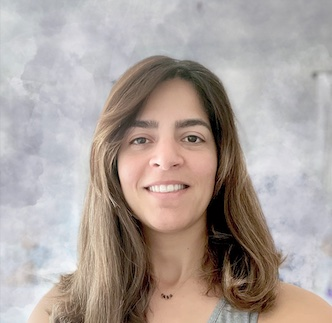

Welcome to my website! I'm a data scientist with a strong foundation as a data analyst, software support engineer
and a Master's degree in Computer Science.
My professional journey has seamlessly blended technical expertise with a passion for data-driven insights,
a keen eye for details, and proficiency in tools like Python, SQL, and VBA.
I'm committed to continuous learning and thrive
on solving problems through innovative, data-driven solutions.
Dive into my portfolio to discover more
about my data-driven expertise and how I can contribute to your projects and endeavors.

The primary objective of this project is to forecast significant wave height along the coasts of Ireland. The project encompasses a comprehensive data
preprocessing phase, involving data cleaning, feature engineering, datetime index standardization, and stationarity adjustments to ensure the
dataset's quality and consistency. The Dataset includes historical wave measurements such as height, direction, speed, sea
temperature, and geographical information recorded for 3 years. We aimed to develop a robust predictive model that could provide reliable estimates of wave
heights for specific locations over a 3-month period. Leveraging advanced machine learning algorithms, and employing time series
techniques, we constructed a model capable of learning intricate data patterns and relationships. Among the tools and techniques utilized were the
XGBoost algorithm, STL decomposition, datetime standardization, and
resampling. Our developed model exhibited a remarkable capacity to detect hourly time series fluctuations and deliver accurate predictions for a 3-month horizon.
Finally, testing and validation processes were carried out to ensure the model's reliability and generalization to
unseen data. The successful completion of this project holds immense potential for maritime safety, coastal management, and various
ocean-related activities, offering stakeholders valuable insights to make informed decisions based on accurate wave height predictions.
This project serves as a showcase for my Master's thesis which was presented at the CATA conference in 2018. In this work, I used R to create a Machine Learning model
to predict the next check-in place only based on places history and with no reference to individual users.
To this end, we learned that the check-in data has a high level of noise in location coordinates. The main research objective of this work is how to leverage a
noise impact reduction technique to enhance performance of prediction model. We designed and developed our own noise handling mechanism to deal with feature noise.
This work represents how the performance of predictors is enhanced by minimizing noise impacts.
-
Tools
python, SQL, VBA
Linux, Tableau
Scikit-learn, Tensorflow, Keras, Scipy
Numpy, Pandas
Matplotlib, Seaborn
-
Data Analysis
Exploratory Data Analysis
Data Cleansing
Statistical Analysis
Visualization
Time Series Analysis and Forecast
-
Data Science
Deep Learning
Machine Learning Modeling
Bias and Variance evaluation
XGBoost and Decision Trees
Over the course of six enriching years at Amdocs, I had the privilege of holding roles as both a software support engineer and a data analyst. During this time,
I had the opportunity to work with a diverse set of tools and technologies, including SQL, VBA, and Python, to effectively manipulate telecommunication data and extract valuable insights from it.
Amdocs, as a lead player in the telecommunications industry, entrusted me with various responsibilities aimed at enhancing customer experience, revenue
and billing assurance, and providing CRM and OMS software support. These responsibilities encompassed a wide range of tasks and challenges.
One significant highlight of my tenure at Amdocs was the development of an innovative VBA automation solution. This solution proved to be a game changer,
significantly elevating data quality standards and automating up to 80% of the data preprocessing steps. As a result, our analytical processes were streamlined,
and the quality of our insights was greatly enhanced.
In summary, my time at Amdocs allowed me to contribute meaningfully to the telecommunications industry by leveraging my skills. Through innovative solutions and a commitment to excellence,
I played a pivotal role in improving data management and analytical processes, ultimately benefiting both the company and its customers.